Dante OS — Your home screen becomes a universe
Your home screen becomes a universe.
A dark, living Android universe: about thirty modules, and a real Linux for rooted phones. No ads, no analytics, no account.
Free · Android 10+ · 64-bit ARM · Dante Pro €5.99 once
A desktop that lives
Animated backgrounds computed by the GPU, your photos as bubbles that flee your finger, live data cards. Dante tunes the effects by itself so every frame stays smooth.
- 23 animated materials, up to 8 layers
- Photo bubbles and black hole pool
- Smooth even with every effect stacked

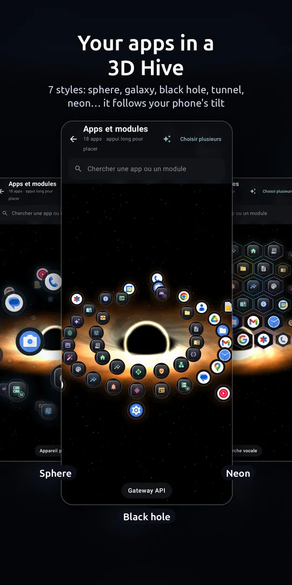


The dock lives in a shield
Tap the shield: the dock springs out, then folds back in. The shield itself wears living materials and reacts to every gesture.
- 7 folds: Tongue, Snake, Vacuum, Whip, Supernova, Teleport, Lockdown
- 8 effects: Lightning, Black hole, Fire, Magic, Force field, Ice, Glitch, Guardian
- 23 materials for the shield
Seven ways to hold your apps
Swipe up: all your apps and Dante's modules, in real 3D, following the phone's movements.
- Watch, Neon, Sphere, Galaxy, Vortex, Black hole, 3D tunnel
- Accent-free search, modules included
- Tilt the phone: the Hive follows
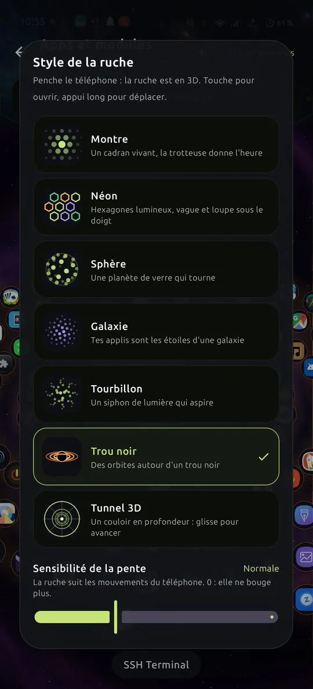
One gesture, and it's all there
Dante draws its own status bar. Tap the clock: the date, the processor, the heat and your protection at a glance. Swipe down from the top: your notifications on the left, your Controls on the right. And Settings becomes a dashboard.
- Tap the clock: the Info popup, tunable block by block
- Long-press the clock: multitasking as 3D cards
- Swipe down: notifications on the left, Controls on the right
- Settings: live readings, modules, Android sorted into 12 families, search
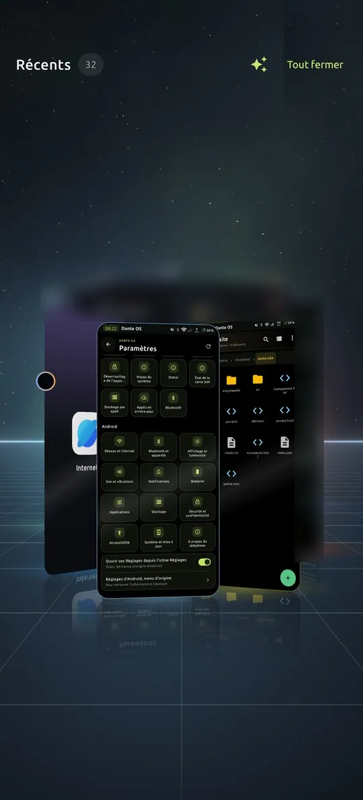


Eleven ways to vanish
One tap, and the whole desktop is pulled away. Only a screen remains to guard your phone: it reacts, remembers, threatens. Only your fingerprint brings Dante back.
- Singularity, Dante, Plasma, God, Vault, Black glass…
- Intruder photo on the 10th touch (option)
- Android's shade and Recents blocked meanwhile
Everything can be tuned, section by section
Dante Engine dresses all of Dante, with a live preview before you apply.
- 21 themes, 12 fonts, 15 clock styles
- Colours, glows, status bar, Info popup
- 10 icon shapes, icon packs
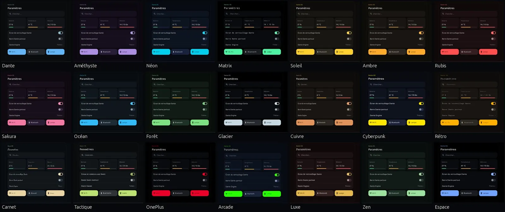
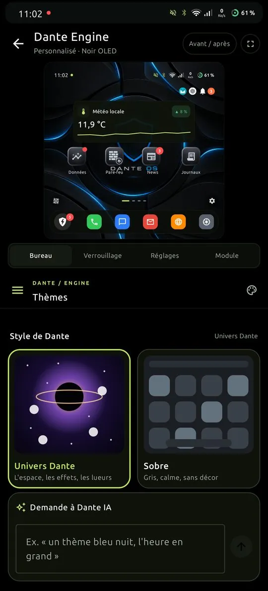


Universe, or Sober
Prefer calm? The Sober style removes space and effects: grey, clean shapes, a simple app grid. One tap, and you're back exactly to your Universe.
- Both free
- Exact return to your Universe


A real Linux inside your phone
With a rooted phone, Dante Core installs a full Debian. Everything runs on the phone, outside the app's data.
- XFCE Linux desktop, Firefox, Dolphin, Konsole
- VS Code, Kali, recipes and scheduled tasks
- Dante Agent and Genesis, the copilot
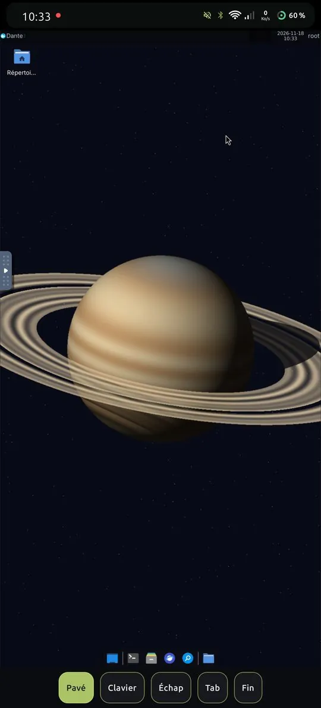


Ask for an app, Dante builds it
A galaxy of 100,000 stars, the Earth in real time, a black hole: small apps created on request, placed on the desktop like any other.
- Made by Dante IA or Dante Agent
- Placed on the desktop in one tap
Earth textures: Solar System Scope (CC BY 4.0).
Dante OS in 40 seconds
Filmed on a real phone, no tricks. The sound is Dante's own music, composed for it.
About thirty tools, in the same universe
Protection, system, files, music, news, live data, on-phone assistant: every module has its entry. Tap a screenshot to open it.


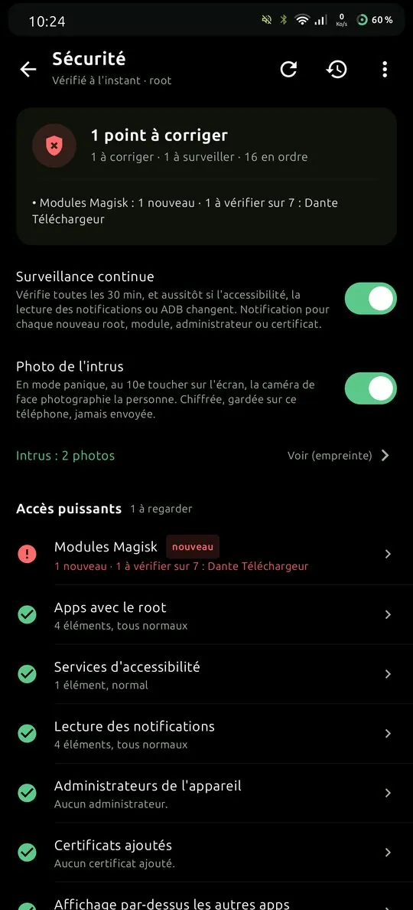
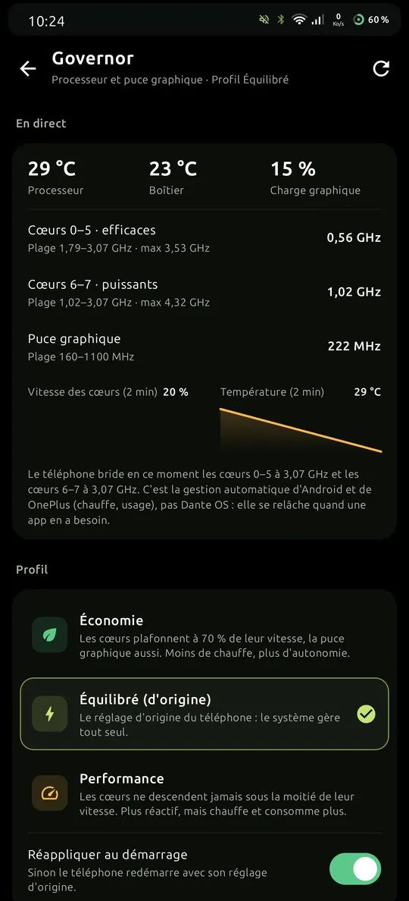

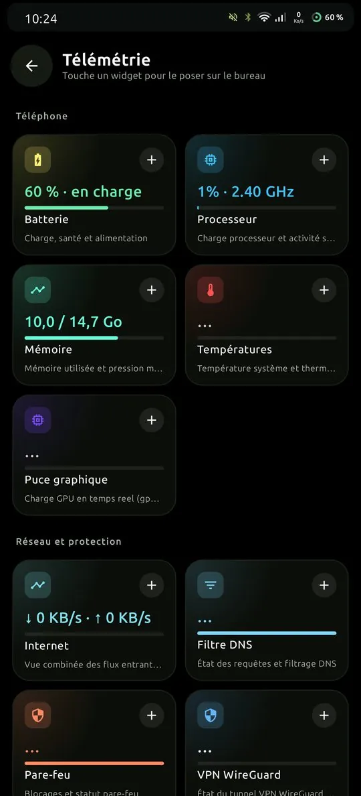


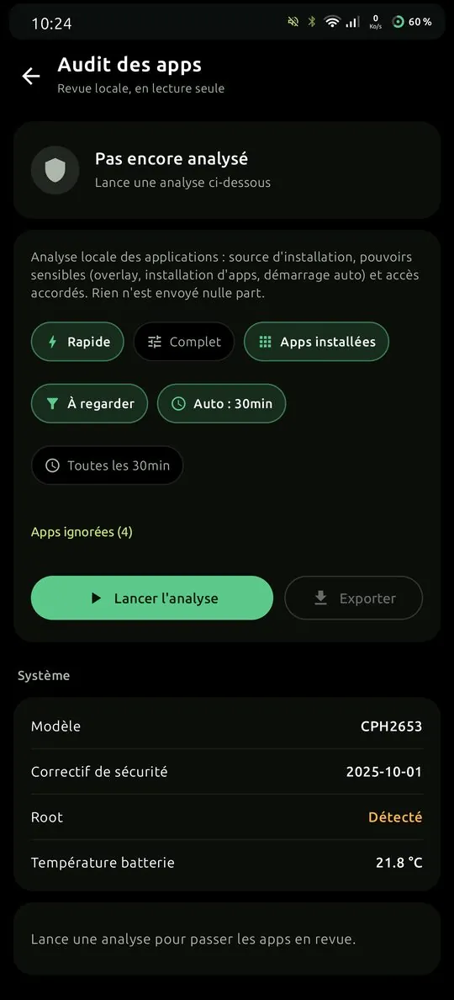
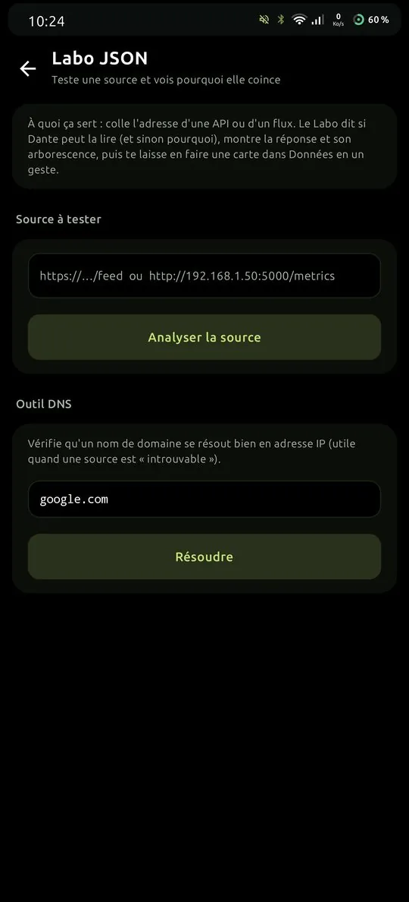

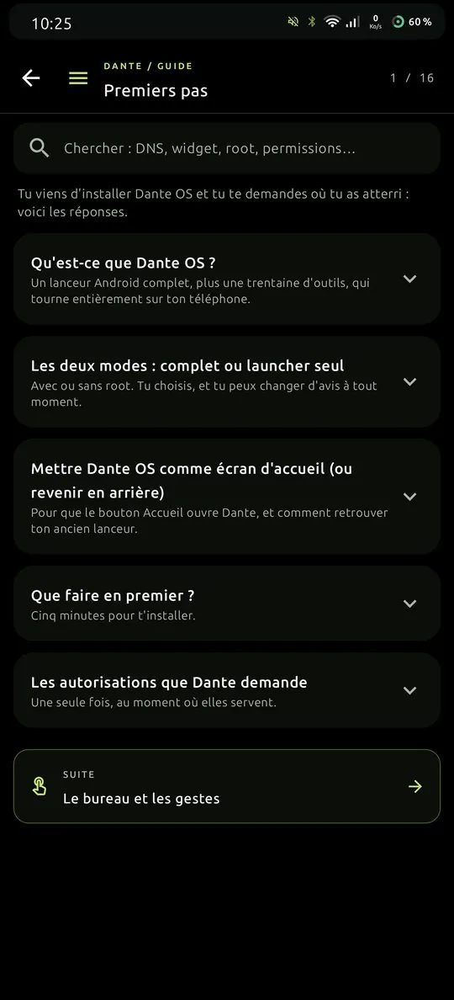
All of Dante, from A to Z
The same entries as the app's Guide: every module, gesture and setting, what Dante reads and sends, and what to do if something gets stuck.
Frequently asked questions
Is it free?
Yes. The core universe is free forever: desktop, dock and its effects, widgets, folders, icons, and every module opens. Dante Pro (€5.99, once) unlocks advanced use: Dante Core, Dante IA, Dante Engine, Dante FX, unlimited sources.
Do I need to root my phone?
No. 28 of the 33 modules work without root. Root only opens the firewall, the DNS filter, XRay, processor and battery tuning, and Dante Core, the real Linux.
Which phones?
Android 10 or newer, on a 64-bit ARM phone (almost every recent phone). Tested on OnePlus 13 (Android 16), Pixel and Fold.
The code isn't published: is it safe?
No ads, no analytics, no account, no root command without your consent. Every release has its published fingerprint and always the same signature: everything can be checked, on VirusTotal or with PCAPdroid. The Transparency page explains how.
Where does my data go?
Nowhere without you: only to the sources you add yourself. Dante IA runs on the phone, your conversations never leave it.
How do I install it?
Download the APK file, open it, allow installs from this source, then choose Dante OS as your home screen. A guided tour welcomes you on first launch.
What if I want my old home screen back?
Android Settings ▸ Apps ▸ Default apps ▸ Home app, and pick the old one. Nothing is lost: your old desktop waits for you exactly as you left it.
Ready to enter the universe?You are in the universe.
Free, no account, no ads. A guided tour welcomes you on first launch, and the Discord is there if you have a question.A question, an idea? The Discord is there.
The code isn't published, but everything can be checked: how →